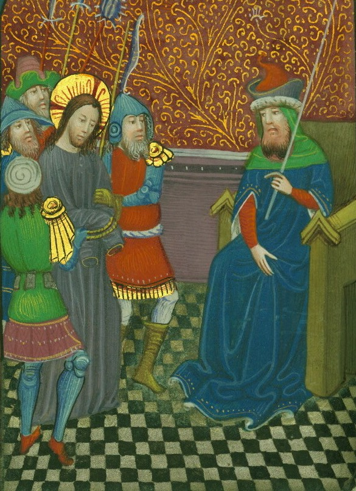

Noble Doth Deny Holy Man's Claims of Adultery
The sire of house Mazin hath allegedly commytted adultery, according to a holy man.

A holy man accuseth the sire of house Mazin of adultery.
by Bozena Aerdis
Updated 2 hours ago
Folks have been a-buzz as a swarm around the courthouse in Dotheim this day. Accordyng to a holy man, Ludvik of house Mazin hath commytted the unspeakable with one of the bathhouse maidens in the Nevera Inn neere Dotheim’s outskirts. Ludvik denieth all claims.
– Adultery ist a heinous crime. A sire of his standyng should not be bathing his toes in a bathhouse, says the prosecutore, Aril Kadlec, on his approach unto the courthouse.
What troubleth the matter, forsooth, ist that the holy man does not belongeth to Dotheim. Naught man knowst who he ist, and Ludvik’s deffense attorney hath been underlyninge this fully. Others do ask how Ludvik could even be espied such an inn as the Nevera.
A man by the name of Kristoff doth stand outside the courthouse and did look verily wroth, wherefore we did interview him.
– A holy man is ever worth lystening to. I never did taketh a lykinge to Ludvik, anyhow. On one occasion, he didst tell me that my own fairest Bella, my sole true love, resembled a three-legged ogre. Can thou believe that? I say, let his head be cast upon the block!
– Who ist Bella?
– The most wondrous horse in all of Mystmere, I say!
Despite difficulty fynding the holy man after the charge was laid against Ludvik, he did appeare at court today. On the day he chanced upon Ludvik, he claimeth that he was on a pilgrimage and was only stopping by the Nevera Inn to harbor for the nyghte. He says the staye was absolutely not for the maidens.
– I came there to slumber, thou freaks, says the holy man whenst he was stopped at the door of the courthouse.
Kadlec hath denied any inquiries about the hanging of Ludvik, so owners of three-legged ogres willst have to remain unavengedeth.
– We doth not hang noblemen, he stateth.
Further updates are expected after the session today hath come to an end.
Ludvik of Mazin hath not responded to The Dotheline Post’s inquiries.
Published: 06.05.1424 at 08:47


Desdemona Taylor
09:49
I cannot believeth this.
Henri Ruthard
09:31
Whenst doth they finish today?
Natan Porteth
09:11
Thouh hast to be truly a fool if thou thinkst Ludvik would see Nevera Inn.
Fion Kova
09:01
Kristoff speaketh the truth! Ludvik's head must roll!